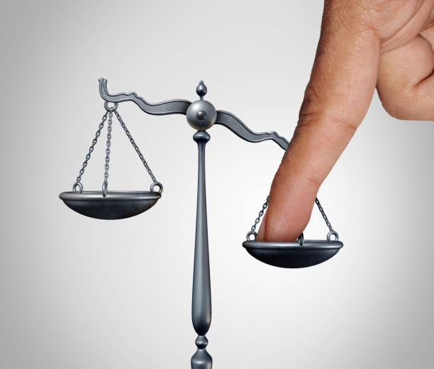

O Sentido da Maldade
O que faz um vilão?
A palavra "vilão" deriva da palavra vila. É simplesmente alguem normal que mora numa vila. E essa palavra ganhou uma conotação negativa após membros da monarquia a utilizarem com desprezo. Até mesmo a palavra "vil" que significa algo sem valor, vem dessa noção de que algo ou alguem que vem da vila não tem valor.
Na "mitologia moderna", muitos jovens estão se identificando com vilões. Desde o Coringa (vilão da série de HQs Batman) que teve uma explosão de popularidade após o lançamento do seu filme solo. Retratando as razões que levaram o coringa a se tornar o vilão que conhecemos hoje.
Na música, como exemplo, temos o rapper "MF DOOM", um dos favoritos desse que vos fala, ele se identificou como o vilão da marvel "Dr. Destino" após a morte do seu irmão na vida real. Segundo o próprio DOOM, a vida o fez ser um vilão. As consequências das situações que ele viveu, o fizeram se identificar com o mal.

"A vida não é justa", dependendo da sua educação, você pode ter ouvido essa frase quase que como um mantra. Muitos jovens afirmam se sentirem injustiçados, pois vem de um ambiente familiar que os deu de tudo, e, ao chegarem num mundo que lhes nega até mesmo seus direitos mais basicos, por vezes, esses jovens se veem numa posição de lutar contra essa "opressão" e se identificam com o mal. Pois veem nele uma saída para a realidade, que muitas vezes, é bem injusta.

"Quem se especializa na identificação do mal, dificilmente verá o bem." (André Luiz através do médium Chico Xavier). Eu acredito que a identificação com o mal seja natural ao desenvolvimento humano, se não for absolutamente necessario. Embora a bondade e maldade sejam subjetivos e se alterem dependendo do contexto. As pessoas precisam de uma noção do que é mal, e geralmente começa com uma injustiça.
Um jovem injustiçado e constantemente oprimido, buscará formas de se livrar dessa pressão. Por vezes, se identificando com "o mal". E sendo perseguido como vilão, coisa que não pode combater, pois ele é um vilão de certa forma. Mas na minha singela opinião, nem todo vilão é mal e todos os vilões podem se tornarem heróis (E vice e versa, por favor não se esqueça disso).
Eu gostaria de poder te dar justiça jovem vilão herói. Mas só posse te desejar boa sorte seja para o "bem" ou para o "mal". Tenha ciência das ações feitas e as consequencias. Não se arrependa, pois pode ser o caso de você estar correto. Tudo exige luta, algumas lutas precisam de sacrificios. Preserve sua vida e não bobeia. Te vejo na rua, Vilão.